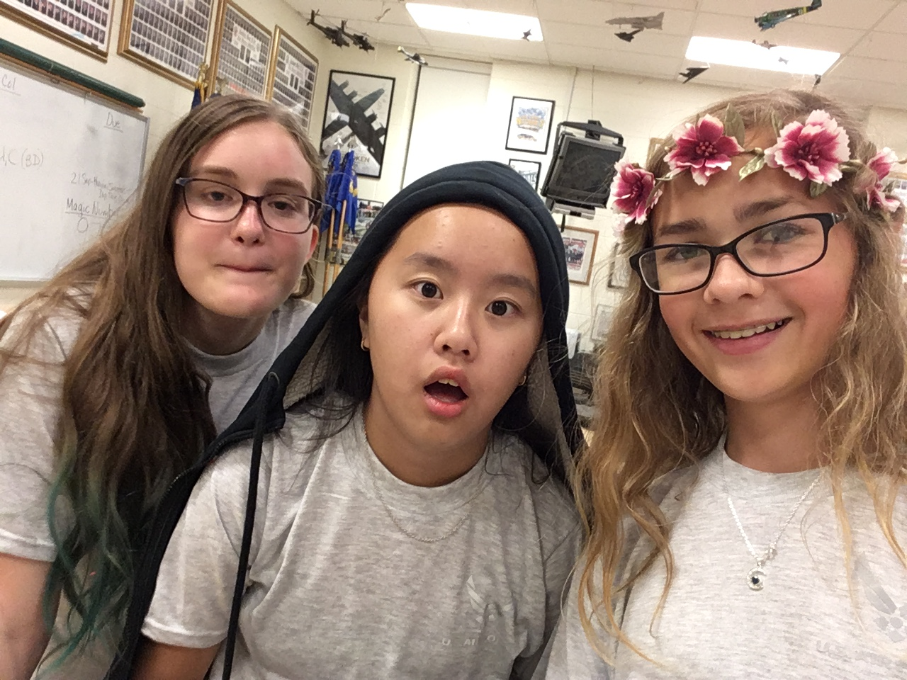
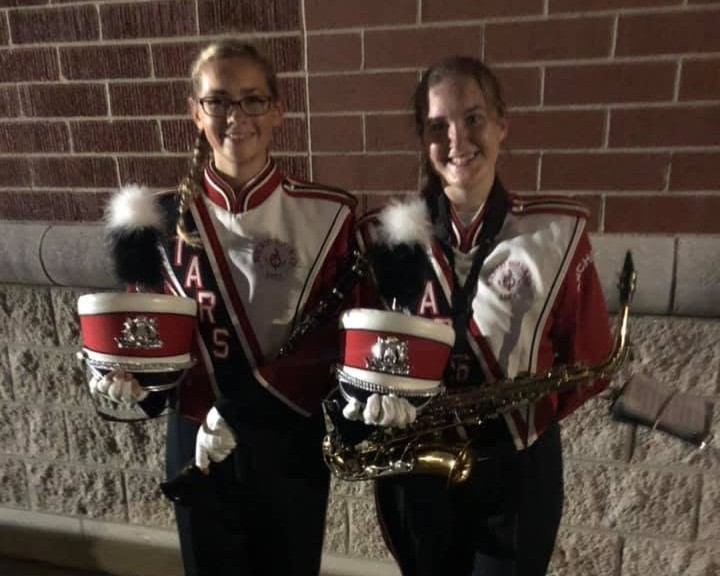
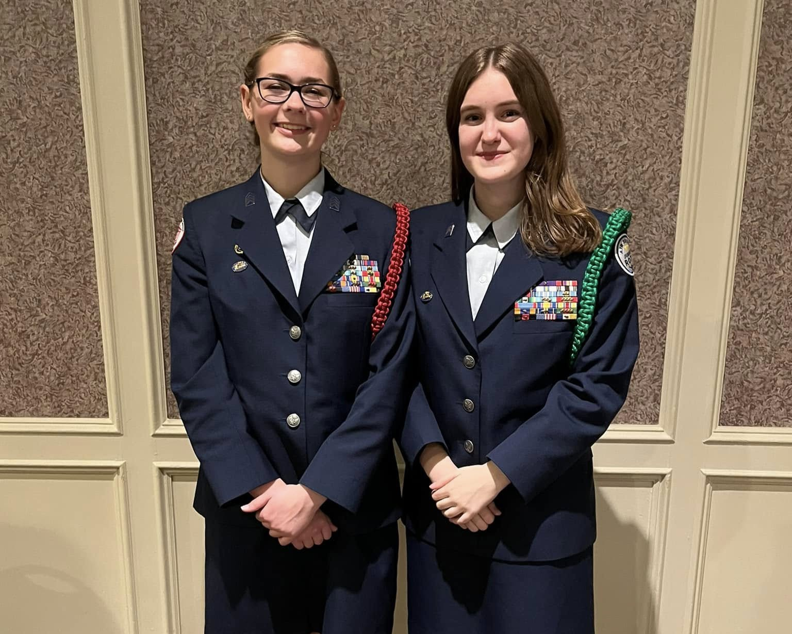
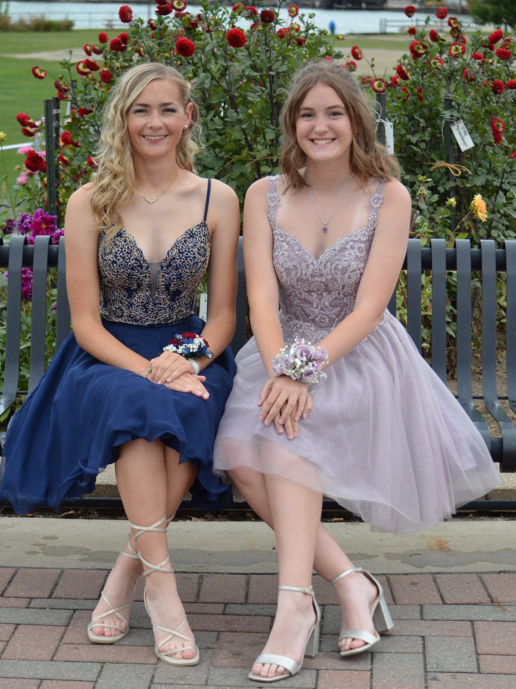

A Bestie's Guide to Adventuring
I LOVE my best friend Emma
Hi, I'm Olivia! Emma and I have been friends since 2017 and best friends since 2019. We bonded over covid, so there's no limit to our ability to find things to do while staying in. But don't be disheartened! We have also gone on several road trips and vacations. Please enjoy as I recount our adventures and give YOU things to do with your own bestie!
The Beginning of Emma and Liv

This is the first photo Emma and I ever took together. Although we first became friends in 2017, we surprisingly didn't end up taking any photos together until 2018. This photo is from when we worked the high school's Homecoming while we were in JROTC. The third girl in the photo is our friend Yayoua.
As cringy as this photo is, it's really fun to see us as just kids spending time together.
High School Things - Band

Emma and I did basically everything together. We drove to school together, were both in band, marching band, and JROTC. We spent some of our high school years in different bands, attending the other's concerts in order to support them, while other years we were in the same band together.
In band, Emma played the alto saxaphone and I played the clarinet. In marching band our senior year, we were both section leaders of our respective sections.
High School Things - JROTC

We were in the JROTC program from 2018 to 2023. While we were only in the same class, or flight, a couple of times over the years, we both participated in, and at one point led the drill team. We helped take the drill team out of covid and reteach the skills that were lost through virtual classes.
For our senior year, we ran the unit as Corps Commander and Director of Operations. We were in the only team in the last 10 years to have earned merit promotions, and the Aerospace Science Instructor Senior Master Sergeant Quintana gave us "Dynamic Duo" shirts as a graduation gift.
Dear Emma

Hello my beautiful, inspiring, and caring best friend,
I had so much fun putting all of our random adventures and shenanigans into one website to share with you. It was so much fun to go down memory lane and relive some of our best moments. We have truly done all kinds of random, wacky things.
You have always been such an important part of my life and I can't believe we have already been friends for 7 years, though in all actuality it feels like you've just always been there. I can't imagine where I would be without you, and I can't wait to see what nonsense we continue to get up to in the future
I hope you don't mind that I used you a little bit for my assignment, and I can't wait to hang out again soon.
Love, Your Buddy,
Olivia